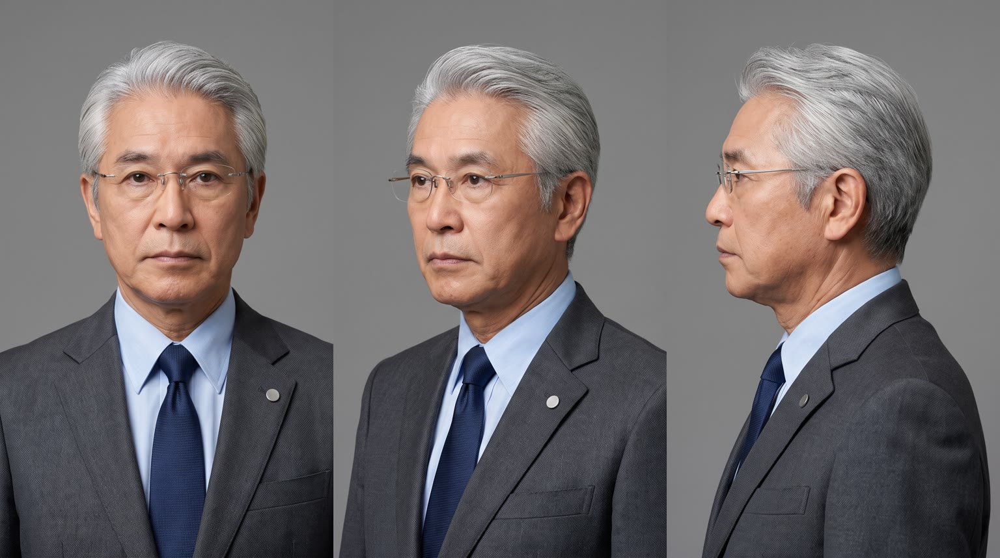
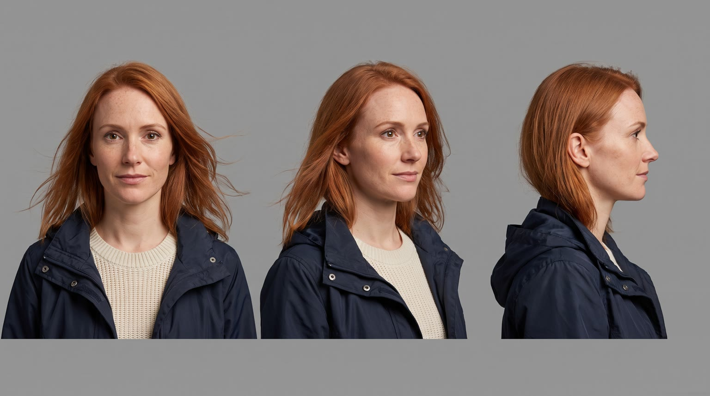
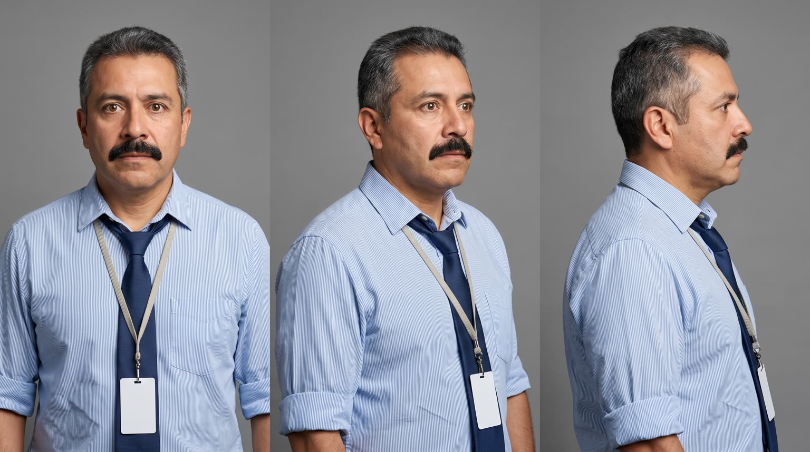
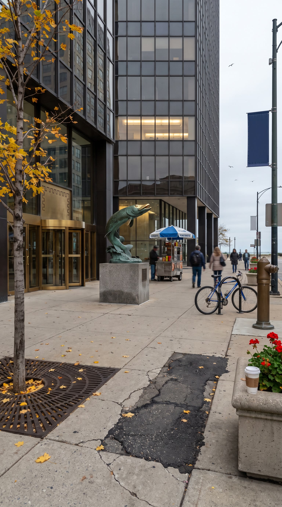
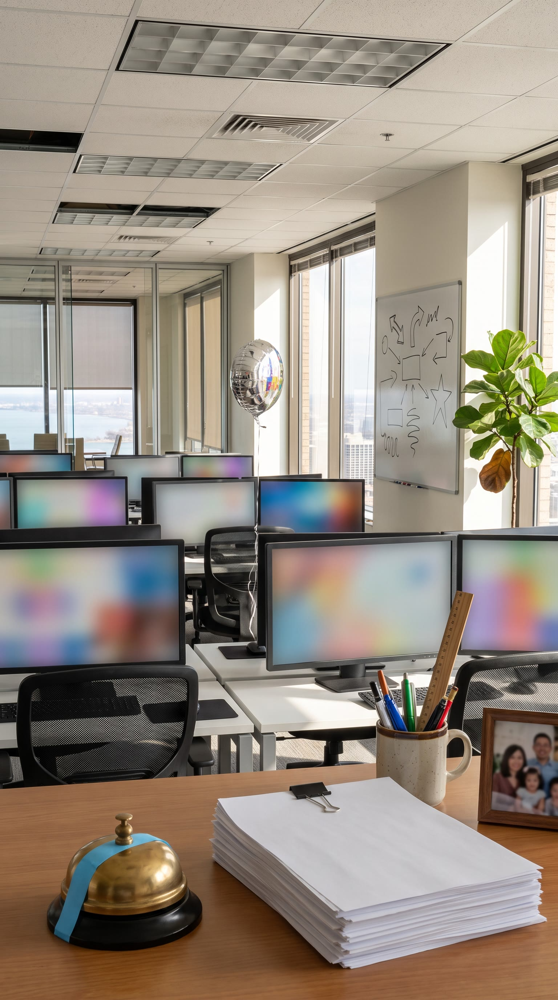
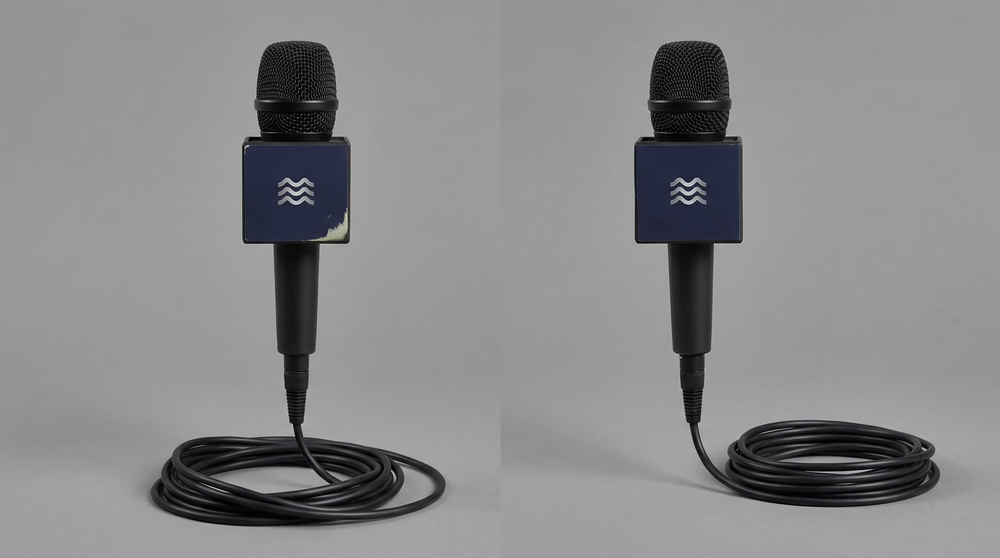
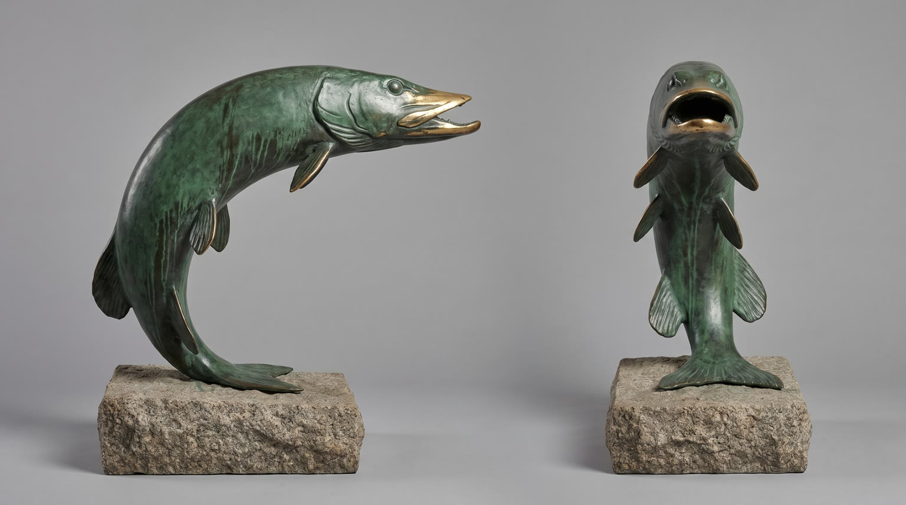
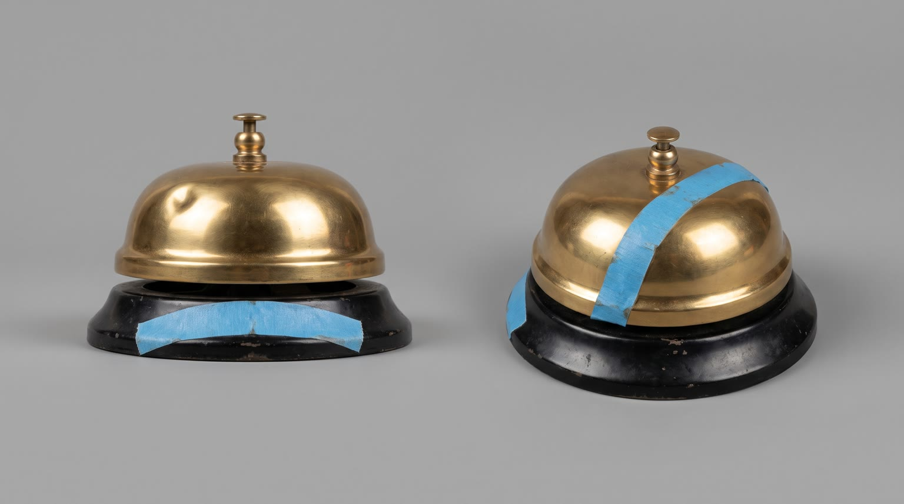

All templates · template.json · original storyboard
Fake breaking news reportbreaking_news-01-slump-overBreaking: It's Over
Lakeport Nine News interrupts your afternoon: for the first time in recorded history, an everyday problem has ended on the fourteenth floor of a downtown office tower. Witnesses say it started with {{product.name}}.
Fit by product type
| ingested | great | the witness holds up the one he just had and the anchor has his own on air |
| applied | good | the thing the whole floor put on this morning; the anchor dabs some on at the desk |
| worn | great | the whole floor is wearing it; the witness models his and the anchor puts his on at the desk |
| handheld | great | the gadget that started it all, held up to the mic as evidence |
| carried | good | the bag everyone on fourteen now carries; the anchor has the same one under the desk |
| home | stretch | the story stays in the office and the studio, so only desk-sized home things fit (lamps, fans, speakers, a desk chair); not beds or sofas |
| consumable | good | the pack from the office kitchenette as evidence |
Refuses: products for children; alcohol; medical, pain-relief or weight products (a news report that a problem is over reads as a health claim); beds, sofas and large appliances
Cast, world and props (shipped with the template)








- Lakeport is a Great Lakes city of 640 thousand people. Lakeport Nine News has been the number two local station since 1978, and its 3pm update normally covers traffic on the Causeway Bridge and lake-effect snow.
- Grant Okimoto has anchored the desk for 26 years and has never once smiled on air. The newsroom runs a betting pool on when he will; it stands at 410 dollars.
- Pembrook Tower is a 22-storey glass office block from 1986 on Harbor Street, with a green bronze leaping pike statue by its revolving door that locals rub for luck. The fourteenth floor is Fenwick Hale Accounting, 38 staff, three days from the quarterly filing deadline.
- Hector Alvarado has worked on fourteen for 17 years. On his desk is the brass counter bell his first manager gave him, rung only when a filing goes out; nobody remembers it ringing at 3pm.
- Jolene Barrett is six months into the job and got the story because the traffic reporter was stuck on the Causeway Bridge.
Script: what each line must do
Right column is the worked example for Red Bull Sugarfree.
| Time | Speaker | Intent (template) | Example |
|---|---|---|---|
| 0.3-2.8 | grant | Hook: announce, with total news gravity, that the everyday problem the product ends is over. Pattern: 'Breaking news. <problem.phrase>... is over.' problem words only from product_extract.problem; never a medical condition Max 9 words. Delivery: grave, measured, a half-beat pause before 'is over' | Breaking news. The three p.m. slump... is over. |
| 3.2-6.2 | jolene | The field report states the local proof that the problem is gone. Pattern: 'Grant, the fourteenth floor is <problem.proof>. <problem.detail>' problem words only from product_extract.problem; never a medical condition Max 10 words. Delivery: urgent live-TV cadence, the detail delivered as if unthinkable | Grant, the fourteenth floor is wide awake. At three p.m. |
| 8.8-11.2 | hector | Product line: the eyewitness names the product as the cause. Pattern: 'It started with one <thing, from product.short_name>. {{product.name}}.' brand spelled with product.phonetic in the video prompt Max 9 words. Delivery: earnest and hushed, like describing a miracle, the name said clearly into the mic | It started with one can. Red Bull Sugarfree. |
| 11.8-14.2 | jolene (off camera) | The reporter confirms the headline benefit as an official fact: 'Sources confirm' plus one benefit from product.benefits. benefit only from product.benefits, reworded no further than person and tense Max 10 words. Delivery: voiceover on the evidence shot, crisp, reading from her notes | Sources confirm it helps concentration and alertness. No sugar. |
| 14.8-16.6 | grant | The anchor asks the serious follow-up. Pattern: 'Jolene, is <problem.short> expected to return?' problem words only from product_extract.problem; never a medical condition Max 8 words. Delivery: concerned, leaning in, completely straight | Jolene, is the slump expected to return? |
| 17.4-19.6 | jolene | Fixed: Not today, Grant. Not today. Max 6 words. Delivery: steely, a tiny smile on the second 'not today' | Not today, Grant. Not today. |
| 21.0-22.2 | hector | Fixed: Inbox zero! Max 3 words. Delivery: arms up, shouted, pure joy | Inbox zero! |
| 25.0-26.2 | grant | Fixed: I'll allow it. Max 4 words. Delivery: deadpan after using it on air, one eyebrow up | I'll allow it. |
| 27.3-28.2 | grant (off camera) | Fixed: That's the news. Max 4 words. Delivery: classic sign-off warmth over the pack shot | That's the news. |
| 28.2-29.4 | grant (off camera) | Tagline: product.tagline if the page has one, otherwise a 3 to 5 word sign-off line about the problem staying gone. Max 6 words. Delivery: warm, the first smile anyone has heard from him on air | Wiiings without sugar. |
Product-adjacent props by type
| ingested | the office kitchenette's fridge door on fourteen, and a coaster under the desk shelf of the anchor desk, where each man keeps his own |
| applied | the top drawer of Hector's desk and the shelf under the anchor desk, where each keeps the product |
| worn | coat hooks by the fourteenth floor lifts and the anchor's chair back, where the product hangs when it is not being worn |
| handheld | Hector's desk beside the brass bell and the shelf under the anchor desk |
| carried | the product hung on Hector's chair back and tucked under the anchor desk |
| home | the corner beside Hector's desk and the side of the anchor desk, where the product is set up |
| consumable | a pack in the office kitchenette cupboard and one in the drawer of the anchor desk |
Shots and how the product appears for each type
S01 · 0 to 3 s · absent
The BREAKING NEWS graphic slams in (post) as Grant, hands folded on the desk, delivers the story with total gravity.
S02 · 3 to 6.5 s · absent
Live outside Pembrook Tower: Jolene reports into her hand mic, gesturing up at the building, wind in her hair.
S03 · 6.5 to 8.5 s · absent
B-roll through the fourteenth floor glass: office workers mid high-five, one sprinting past with a stack of folders, a whiteboard filling with scribbles.
S04 · 8.5 to 11.5 s · reveal
Hector, interviewed at his desk, presents the product beside Jolene's mic as the cause of it all, label to camera.
| ingested | holding {{product.visual}} upright in front of him at chest height, a hand's width away from his shirt, with ONE hand only, fingertips around its base so the whole label shows, his other arm relaxed at his side, label facing camera, straight and undistorted |
| applied | holding {{product.visual}} upright in front of him at chest height with ONE hand only, like evidence, the whole label facing camera, straight and undistorted, his other arm relaxed at his side |
| worn | wearing {{product.visual}}, one hand gesturing to it like evidence, its best side to camera and fully visible |
| handheld | holding {{product.visual}} up at chest height in ONE hand like evidence, logo facing camera, straight and undistorted, his other arm relaxed at his side |
| carried | holding {{product.visual}} up at chest height by its handle or strap with one hand, like evidence, logo facing camera |
| home | standing beside {{product.visual}}, set up at the corner of his desk, one hand resting on it like evidence, its best side to camera |
| consumable | holding one pack of {{product.visual}} upright at chest height in ONE hand like evidence, label facing camera, straight and undistorted |
S05 · 11.5 to 14.5 s · hero
The news camera zooms in on the evidence: the product on Hector's tidy desk beside a neat stack of finished reports.
| ingested | {{product.visual}} standing upright on a tidy office desk, label facing camera, straight and undistorted, cold droplets on it, beside a neat stack of blank finished reports and a pen |
| applied | {{product.visual}} standing upright on a tidy office desk, label facing camera, straight and undistorted, beside a neat stack of blank finished reports and a pen |
| worn | {{product.visual}} laid neatly on a tidy office desk beside a neat stack of blank finished reports, its best side to camera |
| handheld | {{product.visual}} resting on a tidy office desk beside a neat stack of blank finished reports and a pen, logo facing camera |
| carried | {{product.visual}} standing on a tidy office desk beside a neat stack of blank finished reports, logo facing camera |
| home | {{product.visual}} set up at the corner of a tidy office desk, the camera finding it past a neat stack of blank finished reports, its best side to camera |
| consumable | a pack of {{product.visual}} on a tidy office desk with one unit set out beside it, label facing camera, beside a neat stack of blank finished reports |
S06 · 14.5 to 17 s · absent
Back at the desk, Grant leans in with a concerned follow-up; post builds a stacked split screen with Jolene live.
S07 · 17 to 20.5 s · absent
Jolene answers steely into the mic as an office worker jogs past behind her carrying a tall stack of finished binders.
S08 · 20.5 to 23.5 s · absent
Hector slams the enter key and throws both arms up; coworkers around the desks applaud.
S09 · 23.5 to 26.5 s · in_use
Grant glances off camera, produces his own from under the desk, uses it on air, and deadpans at the lens.
| ingested | his own {{product.visual}}, just produced from under the desk, already lowered and held still in one hand at chest height just after having some (not mid-use in this frame), label facing camera, straight and undistorted |
| applied | his own {{product.visual}}, just produced from under the desk, held still in one hand at chest height right after a quick dab (not mid-use in this frame), label facing camera, straight and undistorted |
| worn | wearing his own {{product.visual}}, just put on at the desk, one hand straightening it, its best side to camera |
| handheld | holding his own {{product.visual}} still in one hand at chest height, just produced from under the desk, logo facing camera, straight and undistorted |
| carried | his own {{product.visual}}, just lifted onto the desk from under it, one hand resting on it, logo facing camera |
| home | his own {{product.visual}}, just revealed beside the anchor desk, one hand resting on it or switching it on, its best side to camera |
| consumable | holding his own pack of {{product.visual}} still in one hand at chest height, just produced from under the desk, label facing camera, straight and undistorted |
S10 · 26.5 to 30 s · hero
The product on the glossy news desk as the studio lights glow behind it; Grant's sign-off, then the channel end card.
| ingested | {{product.visual}} standing upright on the glossy navy and silver anchor desk, label facing camera, straight and undistorted, cold droplets, reflected in the glossy desk surface |
| applied | {{product.visual}} standing upright on the glossy navy and silver anchor desk, label facing camera, straight and undistorted, reflected in the glossy desk surface |
| worn | {{product.visual}} laid neatly on the glossy navy and silver anchor desk, its best side to camera, reflected in the glossy desk surface |
| handheld | {{product.visual}} resting on the glossy navy and silver anchor desk, logo facing camera, reflected in the glossy desk surface |
| carried | {{product.visual}} standing on the glossy navy and silver anchor desk, logo facing camera, reflected in the glossy desk surface |
| home | {{product.visual}} set just beside the glossy navy and silver anchor desk, its best side to camera, reflected in the glossy studio floor |
| consumable | the pack of {{product.visual}} standing upright on the glossy navy and silver anchor desk, label facing camera, reflected in the glossy desk surface |
Generation units (templated prompts)
U1 · 9 s
Vertical 9:16 local TV news broadcast, HD broadcast video look, no on-screen graphics. Shot 1 (0 to 3 s): locked-off symmetrical medium close-up with a slow push, @Image1 (Grant, silver hair, rimless glasses, charcoal suit) at a glossy navy anchor desk with glowing abstract blue screens behind, grave and measured: "{{line.L1}}" Shot 2 (3 to 6.5 s): handheld news camera, @Image2 (Jolene, copper-red hair, navy windbreaker) on a downtown sidewalk outside a glass office tower, hand mic with a plain navy flag with no letters, wind in her hair, urgent: "{{line.L2}}" Shot 3 (6.5 to 9 s): telephoto snap zoom through office glass: adult office workers mid high-five, one jogging past with folders, a whiteboard of unreadable scribbles. Keep the lower part of every frame clean. Native sound: studio voice, wind, street ambience, muffled office cheer. No music, no text, no logos, no signs.U2 · 6 s · exact-risk
Vertical 9:16 local TV news field footage, handheld news camera, bright office. Shot 1 (0 to 3 s): slightly low interview angle, @Image2 (Hector, thick black moustache, striped shirt, loosened tie) {{action.S04}}, beside a hand mic with a plain navy flag entering from the left, and says, hushed and earnest: "{{line.L3}}" (say the brand as {{product.phonetic}}). Shot 2 (3 to 6 s): snap zoom that settles on {{action.S05}}; a woman's voice, crisp: "{{line.L4}}" Keep the product's shape, colours and label exactly as @Image1; it never bends. Native sound: office ambience, zoom whir. No music, no text on screen.U3 · 9 s
Vertical 9:16 local TV news broadcast, no on-screen graphics. Shot 1 (0 to 2.5 s): studio, @Image1 (Grant) at the anchor desk leans in with a concerned brow: "{{line.L5}}" Shot 2 (2.5 to 6 s): handheld news camera outside a glass tower, @Image2 (Jolene) into her mic, steely with a tiny smile: "Not today, Grant. Not today." behind her a man in a shirt and tie jogs past happily with a tall stack of plain binders. Shot 3 (6 to 9 s): open-plan office, @Image3 (Hector) slams the enter key and throws both arms up: "Inbox zero!" adult coworkers around him applaud. Keep the lower part of each frame clean. Native sound: studio voice, street ambience, key slam, office cheer. No music, no text, no logos.U4 · 7 s · exact-risk
Vertical 9:16 local TV news studio, even broadcast light, no on-screen graphics. Shot 1 (0 to 3 s): symmetrical medium close-up, @Image2 (Grant) glances off camera, produces his own product from under the desk, uses it once, then {{action.S09}}, raises one eyebrow at the lens and deadpans: "I'll allow it." Shot 2 (3 to 7 s): slow push-in on {{action.S10}}, blurred abstract blue screens behind; Grant's voice, warm: "That's the news. {{line.L10}}" The product matches @Image1 exactly and never bends or changes. Clean empty space above the product. Native sound: the product's own sound in a quiet studio, studio voice. No music, no text.